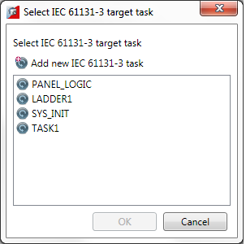

An IEC task can be executed in a number of ways:
It is possible that an IEC task can be started more than once (e.g. from a BASIC program) but this is not a typical scenario. Motion Perfect's support for IEC programs is designed in a way that only one instance of an IEC task can be debugged at a time. Different IEC tasks can be debugged simultaneously, but when connecting to a controller with more than one instance of the same IEC task running, Motion Perfect will ask which instance the debugger should connect to.

It is also possible to set an IEC task to automatically start when the controller boots up, from the context menu of the IEC task, selecting the command “Set AUTORUN”, or using the standard command RUNTYPE.